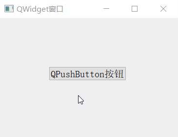
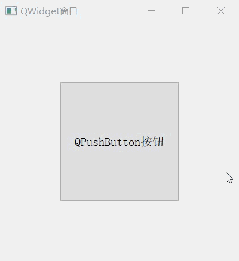

首页 > 编程笔记
Qt QPushButton按钮用法详解
按钮是 GUI 开发中最常用到的一种控件，作为一款著名的 GUI 开发框架，Qt 提供了很多种按钮，比如 QPushButton（普通按钮）、QRadioButton（单选按钮）、QToolButton（工具栏按钮）等。
QPushButton 是实际开发中最常使用的一种按钮，本节就给大家详细讲解它的用法。
QPushButton 类专门用来创建可按压的按钮，如图 1 所示。
QPushButton 按钮上除了可以放置一串文本，文本左侧还可以放置图标，必要时还可以在按钮上放置图片。QPushButton 按钮可以作为一个独立的窗口，但实际开发中很少这样用，通常的用法是像图 1 这样将按钮内嵌到某个窗口中，作为一个子控件和其它控件搭配使用。
QPushButton 类提供了 3 个构造函数，分别是：
注意，第一个构造函数的 parent 参数附有默认值，所以 QPushButton 类还隐含着一个默认构造函数。也就是说，实例化 QPushButton 类对象时可以不传递任何参数。
除了表 1 中罗列的获取、修改属性值的方法外，QPushButton 类常用的成员方法还有：
QPushButton 是实际开发中最常使用的一种按钮，本节就给大家详细讲解它的用法。
QPushButton按钮的创建
QPushButton 类间接继承自 QWidget 类，它的继承关系如下：QPushButton -> QAbstractButton -> QWidget
QAbstractButton 类是所有按钮控件类的基类，包含很多通用的按钮功能。QPushButton 类专门用来创建可按压的按钮，如图 1 所示。

图 1 QPushButton 按钮
图 1 QPushButton 按钮
QPushButton 按钮上除了可以放置一串文本，文本左侧还可以放置图标，必要时还可以在按钮上放置图片。QPushButton 按钮可以作为一个独立的窗口，但实际开发中很少这样用，通常的用法是像图 1 这样将按钮内嵌到某个窗口中，作为一个子控件和其它控件搭配使用。
QPushButton 类提供了 3 个构造函数，分别是：
QPushButton(QWidget *parent = Q_NULLPTR)
QPushButton(const QString &text, QWidget *parent = Q_NULLPTR)
QPushButton(const QIcon &icon, const QString &text, QWidget *parent = Q_NULLPTR)
注意，第一个构造函数的 parent 参数附有默认值，所以 QPushButton 类还隐含着一个默认构造函数。也就是说，实例化 QPushButton 类对象时可以不传递任何参数。
QPushButton按钮的使用
QPushButton 类提供了很多实用的属性和方法，它还从父类继承了很多属性和方法。下表给大家罗列了一些比较常用的属性和方法：| 属 性 | 含 义 |
|---|---|
| text |
保存按钮上要显示的文字。 该属性的值可以通过 text() 方法获取，也可以通过 setText(const QString &text) 方法修改。 |
| icon |
保存按钮左侧要显示的图标。 该属性的值可以通过 icon() 方法获取，也可以通过 setIcon(const QIcon &icon) 方法修改。 |
| iconsize |
保存按钮左侧图标的尺寸。 该属性的值可以通过 iconSize() 方法获取，也可以通过 setIconSize(const QSize &size) 方法修改。 |
| size |
保存按钮的尺寸。 该属性的值可以通过 size() 方法获取，也可以通过 resize(int w, int h) 或者 resize(const QSize &) 方法修改。 |
| font |
保存按钮上文字的字体和大小。 该属性的值可以通过 font() 方法获取，也可以通过 setFont(const QFont &) 方法修改。 |
| flat |
初始状态下，按钮是否显示边框。flat 属性的默认值为 flase，表示按钮带有边框。 该属性的值可以通过 isFlat() 方法获取，也可以通过 setFlat(bool) 方法修改。 |
| enabled |
指定按钮是否可以被按下。 该属性的默认值为 true，表示按钮可以被按下，即按钮处于启用状态。当该属性的值为 false 时，按钮将不能被点击，按钮处于禁用状态。 该属性的值可以通过 isEnabled() 方法获取，也可以通过 setEnabled(bool) 方法进行修改。 |
| autoDefault |
当用户按下 Enter 回车键时，是否触发点击按钮的事件。 当按钮的父窗口为 QDialog 窗口时，该属性的值为 true；其它情况下，该属性的默认值为 false。 该属性的值可以通过 autoFault() 方法获取，也可以通过 setAutoFault(bool) 方法修改。 |
除了表 1 中罗列的获取、修改属性值的方法外，QPushButton 类常用的成员方法还有：
| 方 法 | 功 能 |
|---|---|
| move(int x, int y) | 手动指定按钮位于父窗口中的位置。 |
| setStyleSheet(const QString &styleSheet) | 自定义按钮的样式，包括按钮上文字或图片的显示效果，按钮的形状等等。 |
| setGeometry(int x, int y, int w, int h) | 同时指定按钮的尺寸和位置。 |
| adjustSize() | 根据按钮上要显示的内容，自动调整按钮的大小。 |
| setDisabled(bool disable) | 指定按钮是否可以被按下。当 disable 值为 true 时，表示按钮不能被按下，即禁用按钮的功能。 |
QPushButton按钮的信号和槽
GUI 程序中，按钮的主要任务是完成和用户之间的交互，下表罗列了 QPushButton 类常用的信号函数和槽函数：| 信号函数 | 功 能 |
|---|---|
|
clicked() clicked(bool checked = false) |
用户点击按钮并释放（或者按下按钮对应的快捷键）后，触发此信号。 |
| pressed() | 用户按下按钮时会触发此信号。 |
| released() | 用户松开按钮时会触发此信号。 |
| 槽函数 | 功 能 |
| click() | 单击指定的按钮。 |
| setIconSize() | 重新设置按钮上图片的尺寸。 |
| hide() | 隐藏按钮控件。 |
| setMenu(QMenu *menu) | 弹出与按钮关联的菜单。 |
实例演示QPushButton按钮用法
接下来通过一个实例，给大家演示 QPushButton 按钮的用法：
#include <QApplication>
#include <QWidget>
#include <QPushButton>
int main(int argc, char *argv[])
{
QApplication a(argc, argv);
QWidget widget;
//设置 widget 窗口的标题
widget.setWindowTitle("QWidget窗口");
//创建一个按钮，并内嵌到 widget 窗口中
QPushButton but("QPushButton按钮",&widget);
//按钮的位置位于距 widget 窗口左上角 (100,100) 的位置
but.move(100,100);
//设置按钮上文字的大小。
but.setStyleSheet("QPushButton{font:20px;}");
//调整按钮的尺寸
but.resize(200,200);
//建立信息和槽，当用户点击并释放按钮后，该按钮隐藏。
QObject::connect(&but,&QPushButton::clicked,&but,&QPushButton::hide);
widget.show();
return a.exec();
}
将程序复制到 main.cpp 文件中，运行结果为：

图 2 运行结果
图 2 运行结果
关注公众号「站长严长生」，在手机上阅读所有教程，随时随地都能学习。内含一款搜索神器，免费下载全网书籍和视频。

微信扫码关注公众号